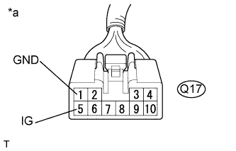
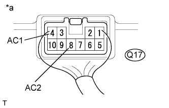

ИНВЕРТОР НАПРЯЖЕНИЯ (для 5-дверных моделей) > ПРОВЕРКА БЕЗ СНЯТИЯ С АВТОМОБИЛЯ |
| 1. ПРОВЕРЬТЕ ИНВЕРТОР НАПРЯЖЕНИЯ В СБОРЕ |
|  |
Отсоедините разъем инвертора напряжения.
Измерьте напряжение в соответствии со значениями, приведенными в таблице.
| Контакты для подключения диагностического прибора | Положение переключателя | Заданные условия |
| Q17-5 (IG) - Q17-1 (GND) | Замок зажигания в положении ON (ВКЛ) | 11–14 В |
| Q17-1 (GND) - масса | Всегда | Менее 1 В |
| *a | Вид спереди разъема со стороны жгута проводов: (к инвертору напряжения в сборе) |
|  |
Подсоедините разъем инвертора напряжения.
Измерьте напряжение в соответствии со значениями, приведенными в таблице.
| Контакты для подключения диагностического прибора | Положение переключателя | Заданные условия |
| Q17-4 (AC1) - Q17-8 (AC2) | Замок зажигания в положении ON (ВКЛ), главный выключатель во включенном положении | 220 В перем. тока |
| *a | Устройство с подсоединенным жгутом проводов (инвертор напряжения в сборе) |